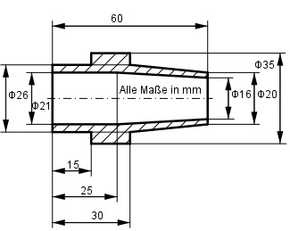

Aufgabe 294 Welche Masse m hat die Buchse bei einer Dichte von 8,3 g/cm3?

Volumen = = Kegelstumpf K1 + Zylinder Z1 + Zylinder Z2 - - Kegelstumpf K2 - - Zyinder Z3 л * h K1 = -------- * (r12 + r1 * r2 + r22) 3 r1 = 20 mm/2 = 10 mm = 1 cm r2 = 26 mm/2 = 13 mm = 1,3 cm h = 30 mm = 3 cm л * 3 K1 = -------- * (12 + 1 * 1,3 + 1,32) cm3 3 K1 = 12,53 cm3 л * h K2 = -------- * (r32 + r3 * r4 + r42) 3 r3 = 21 mm/2 = 10,5 mm = 1,05 cm r4 = 16 mm/2 = 8 mm = 0,8 cm h = 35 mm = 3,5 cm л * 3 K2 = -------- * (1,052 + 1,05 * 0,8 + 0,82) cm3 3 K2 = 9,46 cm3 Z1: r5 = 26 mm/2 = 13 mm = 1,3 cm h1 = 15 mm = 1,5 cm Z1 = л * r52 * h1 Z1 = л * 1,32 * 1,5 cm3 = 7,96 cm3 Z2: r6 = 35 mm/2 = 17,5 mm = 1,75 cm h2 = 15 mm = 1,5 cm Z2 = л * r52 * h2 Z2 = л * 1,752 * 1,5 cm3 = 14,42 cm3 Z3: h3 = 25 mm = 2,5 cm Z3 = л * r32 * h3 Z3 = л * 1,052 * 2,5 cm3 = 8,65 cm3 V = 12,53 cm3 + 7,96 cm3 + 14,42 cm3 - 9,46 cm3 - - 8,65 cm3 V = 16,8 cm3 m = V * ρ = 16,8 cm3 * 8,3 g/cm3 = 139,4 g